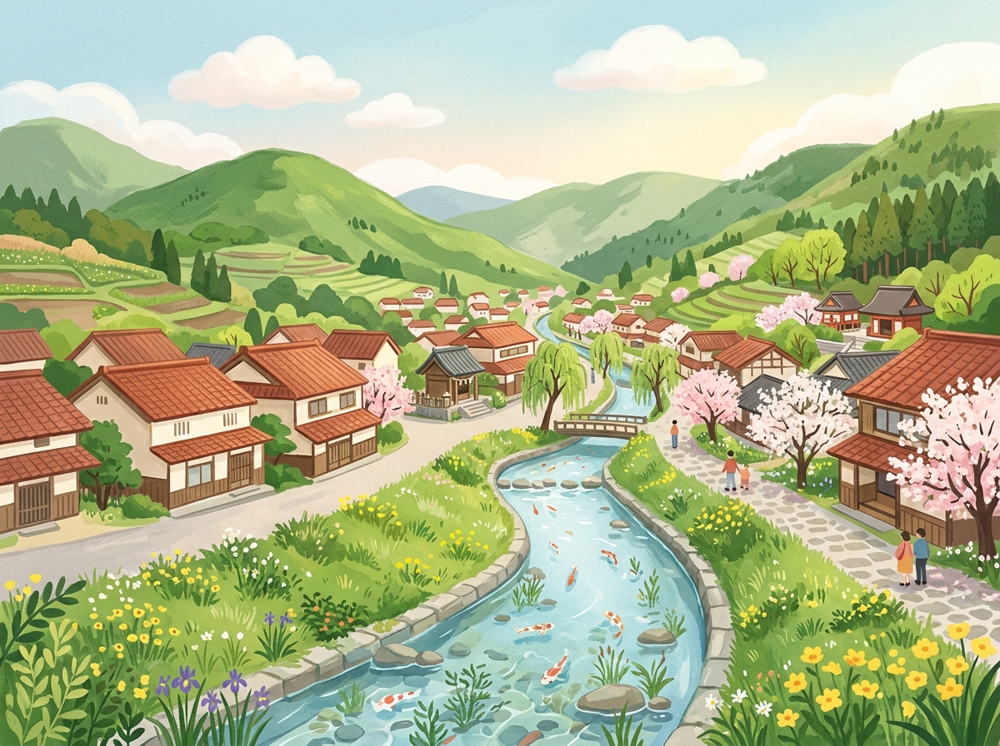
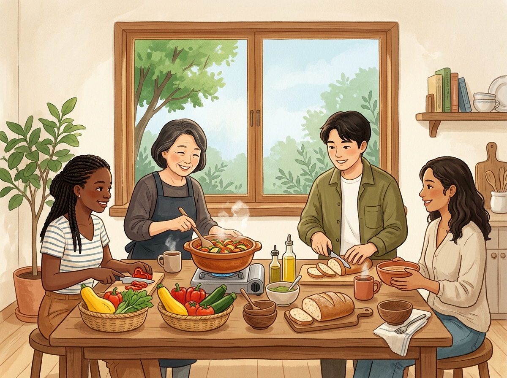
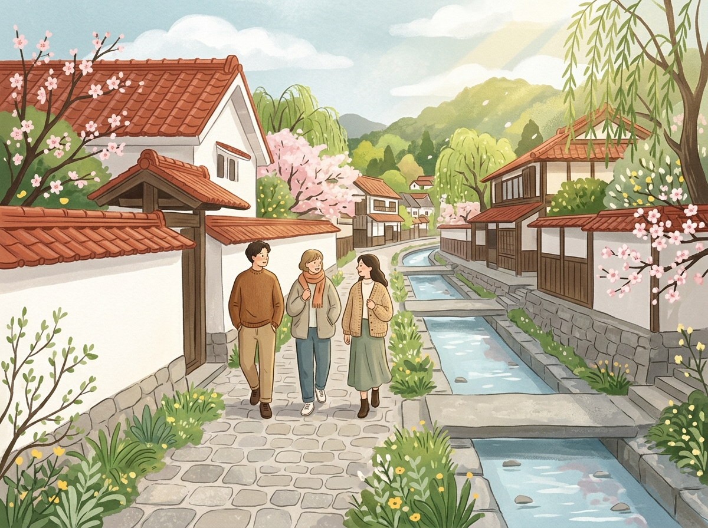
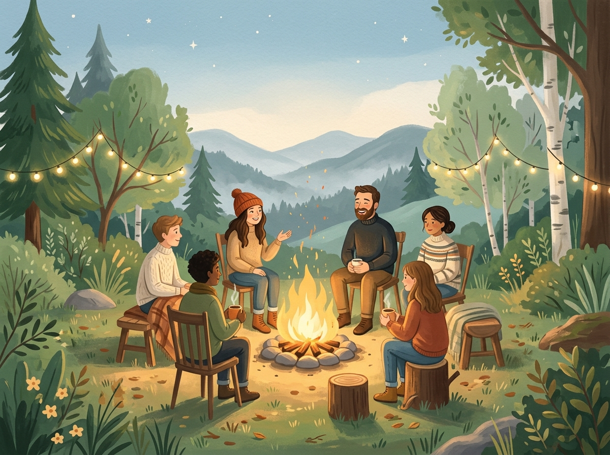

01 / NO TESTS, NO GRADES
試験も、成績も、正解もない
知識を詰め込むのではなく、自分の感性や「今ここ」の気持ちに耳を澄ませる時間。肩書を外したフラットな関係で出会えます。
“試験も成績もない” 大人のための学校、つわのホイスコーレ。山あいの小さな城下町・津和野の自然のなかで、いっしょにごはんをつくり、焚き火を囲み、心ほどける「余白のじかん」を分かち合います。
北欧デンマークで180年以上愛されてきた「フォルケホイスコーレ」。テストも評価もなく、年齢や肩書をそっとおろして「これからどう生きたいか」を語り合う学び舎の精神に惹かれ、ここ島根県津和野町で「つわのホイスコーレ」は生まれました。

知識を詰め込むのではなく、自分の感性や「今ここ」の気持ちに耳を澄ませる時間。肩書を外したフラットな関係で出会えます。
スケジュールをびっしり埋めないのが、つわのホイスコーレ流。風に吹かれて散歩したり、ぼんやり空を見上げる余白が心をほぐします。
地元食材を囲む食卓、朝のうた、夜の焚き火。津和野の高校生や地域の人とも交わりながら、あたたかなHygge（ヒュッゲ）を育てます。
2泊3日や1週間の滞在プログラムで流れる、ゆったりとした1日のリズム。時間帯をクリックして、ホイスコーレの空気を感じてみてください。

07:30 — 10:00決まったメニューを配られるのではなく、「食べたい人たちが自分たちで準備して、いっしょに食べる」朝ごはん。農家さんのとれたて卵や温かいスープを囲むうち、自然と笑顔がこぼれます。
そのあとはデンマークの文化にならって、みんなで声を合わせてうたを歌い、今の心とからだのコンディションをそっと分かち合う「チェックイン」から1日がはじまります。

11:00 — 16:00歴史ある白壁の町並みや、澄んだ水が流れる津和野のまちへ。哲学者のことばや自分の問いをポケットに忍ばせて、鳥の声や風の匂いを感じながら思い思いのペースで歩きます。
午後のたっぷりとした余白時間は、カフェで読書しても、川辺で昼寝をしても、ジャーナリングや詩づくりに没頭してもOK。自分の「心地よい」を思い出すひとときです。
コミュニティキッチンに集まって、津和野産の旬の野菜や地元食材を使ったラタトゥイユや手料理をみんなでクッキング。津和野の高校生や地域で挑戦する大人たちも交わります。
あたたかいごはんを囲んだあとは、ワールドカフェやライフスタイルトーク。いろんな生き方に触れることで、自分の未来の選択肢がふわりと広がっていきます。

20:00 — 22:30ゆらめく炎とパチパチと爆ぜる薪の音。マシュマロを焼いてスモアにしたり、やさしい音楽に耳を傾けたりしながら、ただ火を眺める贅沢な夜。
不思議な火のぬくもりに包まれると、初対面の緊張もすっとほどけて、「なぜここに来たのか」「ほんとうは今なにを感じているのか」が自然とことばになっていきます。
新しい季節のはじまりに開催された「つわのホイスコーレ'26春」。しまねの関係人口ポータルサイト「しまっち！」では、地元食材を囲んだ交流キッチン、津和野の高校生や地域住民とのあたたかな出会い、感性をひらく余白の時間の様子がたっぷりレポートされています。
津和野で「立ち止まる時間」を過ごした参加者から届いた、リアルなことばたち。
理性より感性に訴えかけてくるものがありました。津和野の自然や人のあたたかさの中で過ごした体験は、特別な気づきをくれました。
忙しい毎日の中でも、あえて「余白」の時間をつくることの大切さを痛感しました。毎日をがんばっている社会人や学生の友だちに、ぜひおすすめしたいです。
最初はただ津和野という場所に惹かれて参加したけれど、気づいたらつわのホイスコーレの空間や対話を心から楽しんでいる自分がいました。
津和野の高校生や地域で挑戦する大人たちとの交流を通して、地域の人たちのつながりの温かさや、津和野愛を肌で感じることができました。
ホイスコーレの朝みたいに、いまの気分をひとつ選んでみてください。津和野からのちいさなことばをお届けします。
上のボタンから、いまの気分をそっと押してみてくださいね。
津和野町で「フォルケホイスコーレをやりたい！」という想いを持った若者たちが集まり、2022年6月に生まれたチームです。
はじめてみんなで顔を合わせて作戦会議をした日。鍋いっぱいに作ったあたたかなラタトゥイユを囲み、自然と歌をうたい、窓の外に雨が降ってきた――そんなはじまりの日の情景が、そのままチームの名前になりました。
春や夏を中心に、津和野町で2泊3日〜1週間ほど暮らすように過ごす学びの場。
津和野を飛び出して、全国のさまざまな土地を訪ねて対話の場を共につくるプロジェクト。
オンラインから気軽に参加できる、北欧の教育・暮らしの読書会や対話コミュニティ。